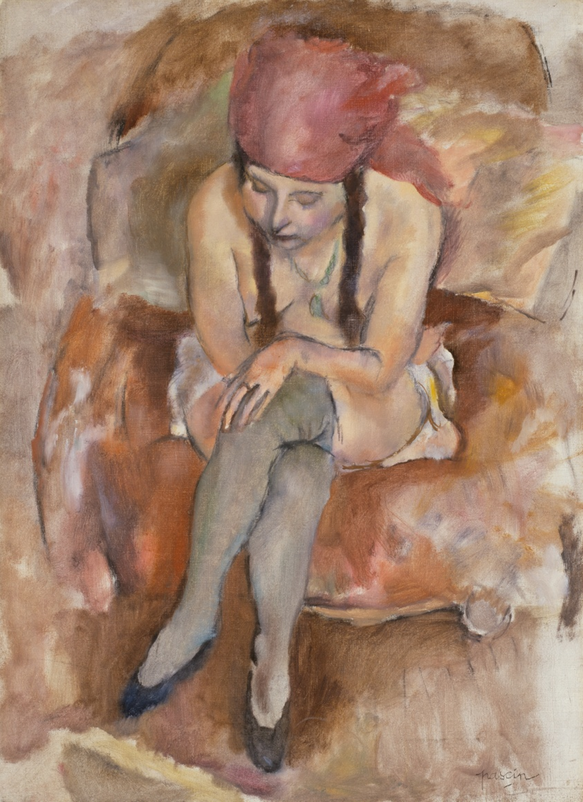

A platform that matches an uploaded artwork to similar artworks in museum collections, leveraging OpenAI Vision and a RAG model.
performance analysis
The data from the artwork on the left was created with OpenAI Vision, while the artwork on the right is on the vector database, and its data was created by analyzing several APIs.

*Subjects*: portrait, woman, seated figure, interior, chair, clothing, expression, human figure, muted colors, blue (color), green (color), red (color) *Classifications*: painting, oil on canvas, european painting *Terms*: oil painting, portrait, seated figure, interior scene, 19th century, muted colors, expression, human figure, blue, green, red *Medium*: Oil on canvas *Artist Genes*: Post-Impressionism, Figurative Art, Individual Portrait, Interior, Human Figure, Muted Palette *Genre*: portrait painting

*Subjects*: Century of Progress, world's fairs, Chicago World's Fairs, portraits, women; *Classifications*: painting, modern and contemporary art; *Terms*: painting, Century of Progress, modern and contemporary art, world's fairs, Chicago World's Fairs, portraits, women; *Medium*: Oil on canvas; *Artist Genes*: Modern, 1900 - 1917 Art, East European Art, Figure Studies, French Art, Gestural, Group Portrait, Human Figure, Individual Portrait, Nude, Oil Painting, Painting, Portrait, Post-Impressionism, Pre-World War II School of Paris, Rural Life, Scenes of Everyday Life ; *Movement*: Expressionism; *Genre*: portrait
performance analysis
When inputting an artwork that exists in the database, the match percentage is not perfect but it will always be one of the top matches.